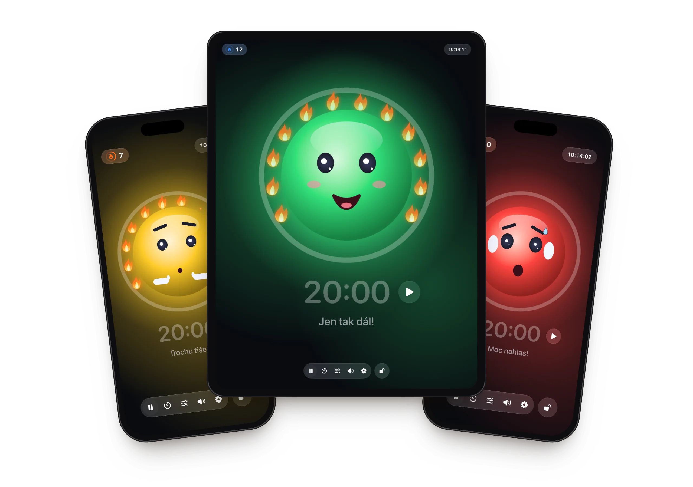
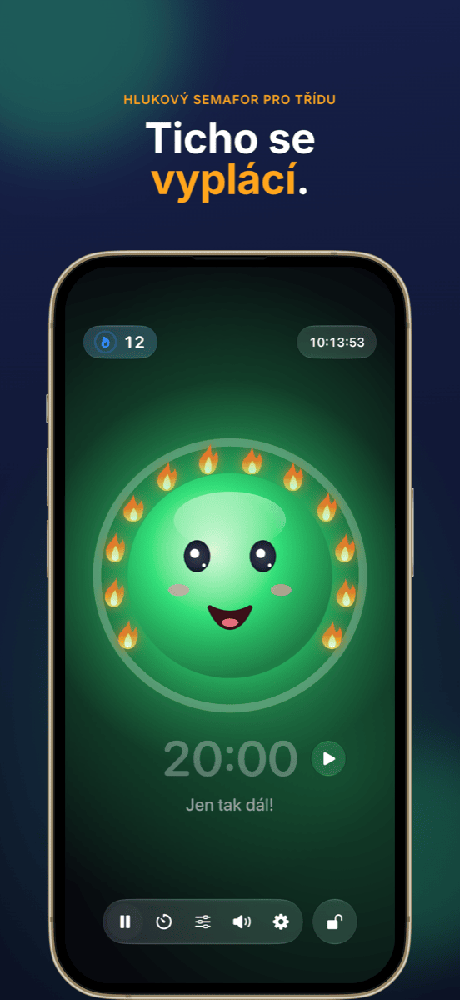
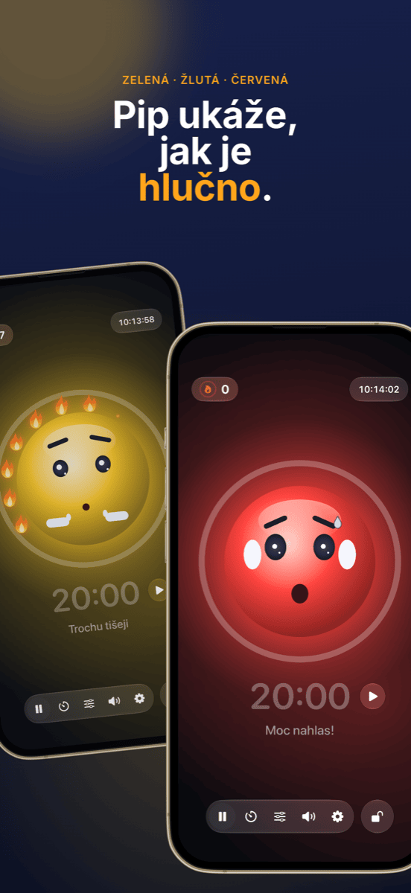
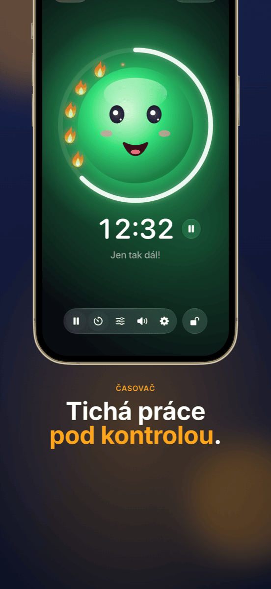
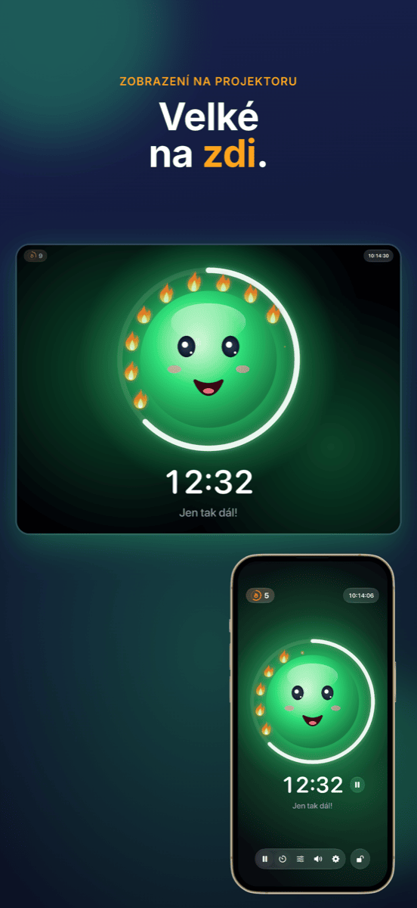
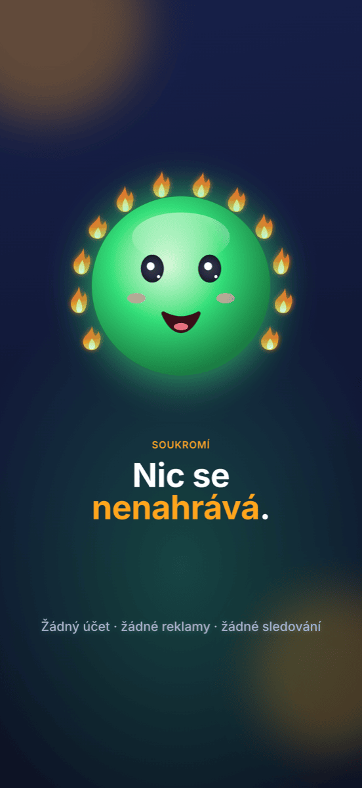

Ruhe
Přátelský hlukový semafor do třídy: tichá práce přináší plameny – hluk se nikdy netrestá.






Funkce
Hlukový semafor s maskotem
Zelená, žlutá, červená – veselý obličej ukazuje, jak je ve třídě hlučno. Při žluté tiše řekne „pšš“, při červené si zacpe uši.
Plameny místo trestů
Dokud je ticho, rozsvěcuje se jeden plamen za druhým. Dvanáct plamenů tvoří plný věnec – a to se slaví. Když je moc hluku, plameny zhasnou.
Časovač na očích
Kruh kolem maskota ukazuje zbývající čas. Spuštění a zastavení hned vedle času; na konci se měření pozastaví.
Zobrazení na projektoru
Na projektoru nebo druhém displeji se semafor zobrazí přes celou obrazovku – ovládání zůstává na vašem iPadu.
Pro každou třídu
Dvěma posuvníky nastavíte, kdy začíná žlutá a červená – nebo Ruhe 5 sekund poslouchá a zkalibruje se sám.
Zamknout ovládání
Zamčené pomocí Face ID nebo kódu, aby nikdo ze třídy nic nezměnil.
Jak to funguje
Postavte iPad
Otevřete Ruhe a klepněte na obličej – měření začne.
Nechte třídu pracovat
Maskot ukazuje třídě, jak je hlučno, a sbírá plameny za každou chvíli ticha.
Uvidíte úspěch
Na konci hodiny se počítá to, co se povedlo: věnec plamenů.
Průvodce
Nápověda a podpora
Ruhe nic neměří – co dělat?
Ruhe potřebuje přístup k mikrofonu. Povolte ho v Nastavení → Soukromí a zabezpečení → Mikrofon → Ruhe.
Semafor přeskočí na červenou příliš brzy nebo příliš pozdě.
Klepněte v liště na ikonu posuvníků a posuňte prahy pro žlutou a červenou – nebo použijte „Nastavit automaticky“, zatímco třída normálně pracuje.
Jak zobrazím Ruhe na projektoru?
Připojte iPad k projektoru kabelem nebo přes AirPlay. Ruhe tam automaticky zobrazí semafor přes celou obrazovku a ovládání zůstane na iPadu.
Jak vynuluji plameny?
Klepněte na počítadlo plamenů vlevo nahoře. Tam můžete plameny opravit nebo všechny nastavit na 0. Pokud byl Ruhe déle než 10 minut na pozadí, další hodina začíná stejně od 0.
Nahrává se něco?
Ne. Ruhe měří jen hlasitost – nic se nenahrává, neukládá ani neodesílá. Podrobnosti najdete v zásadách ochrany osobních údajů.
Vaše otázka tu není?
Napište na info@crabucate.de – obvykle odpovídám do jednoho až dvou dnů.
Ticho, které dělá dobře.
Pro iPad a iPhone – nyní v App Storu.